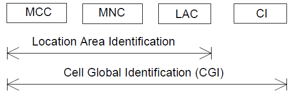

|
LTE Quick Reference |
|
CGI (Cell Global Identity)
CGI Stands for Cell Global Identity. As the name implies, it is a specific ID which can uniquely identify a cell in the whole world. As shown in the figure from 23.003 4.3.1 Cell Identity (CI) and Cell Global Identification (CGI), CGI is made up of multiple components.
As you know, MCC + MNC is PLMN. From MCC, you can figure out in which country the cell is located. From MNC, you can figure out which network operator it belongs to. From LAC, you can figure out which location area it belongs to. From CI (Cell Identity : two octets), you can identify the exact one cell.

Why we need this kind of ID ? It is mainly for ANR and SON. ANR/SON is a big topic. Please see ANR and SON pages for further details.
|